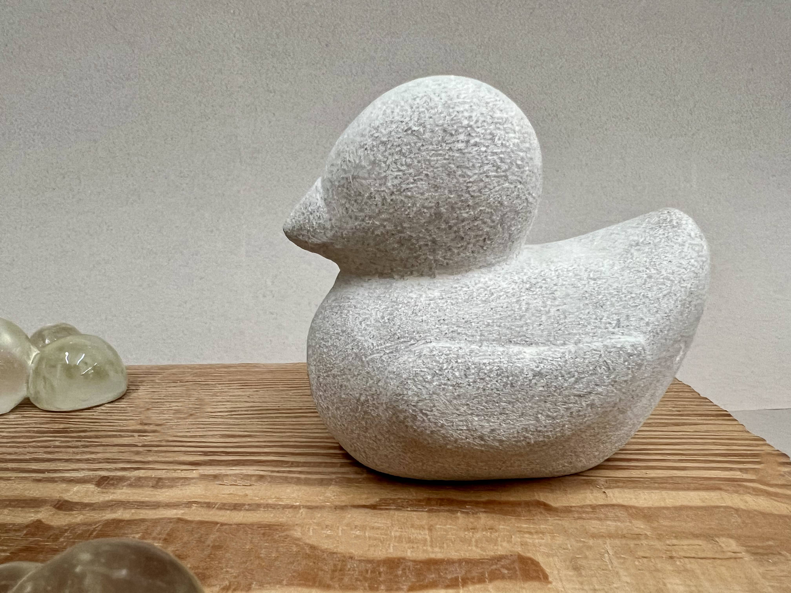
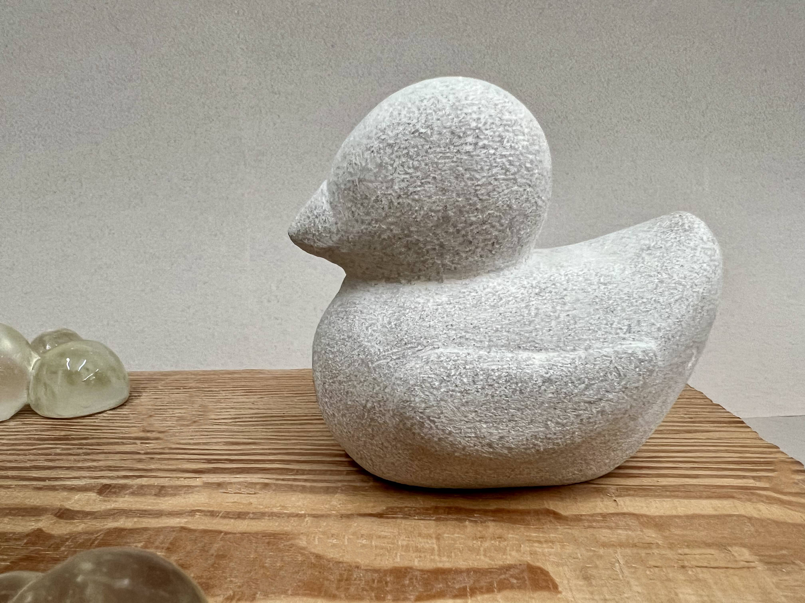

Bath Talk
Limestone, Resin, Wood
12” x 10” x 8”
2024

Bath Talk emerged from the quiet warmth of late-night conversations, moments where the water softened everything—our words, our silences, our guarded selves. Sitting there, the weight of the world dissolved, and I felt as though our inner children were reaching across the years, speaking with a simplicity and honesty that we too often lose. This piece seeks to hold that moment, that sense of raw connection, inviting viewers to linger in their own reflections. In a world that so often demands polish and performance, Bath Talk is a call back to innocence—a space where vulnerability is not only safe but transformative, reminding us that true openness is where meaningful connections begin.
🖼️:
▫️ The Art Students League of New York Annual Student Art Show, Phyllis Harrison Mason Gallery, New York, NY (2025)


 
